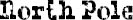

THE SPUD LAMP WAS a big hit at the science fair. Jack and I got an A for it. It was the first A Jack got in any class all year long, so he was psyched.
All the science-fair projects were set up on tables in the gym. It was the same setup as the Egyptian Museum back in December, except this time there were volcanoes and molecule dioramas on the tables instead of pyramids and pharaohs. And instead of the kids taking our parents around to look at everybody else’s artifact, we had to stand by our tables while all the parents wandered around the room and came over to us one by one.
Here’s the math on that one: Sixty kids in the grade equals sixty sets of parents—and doesn’t even include grandparents. So that’s a minimum of one hundred and twenty pairs of eyes that find their way over to me. Eyes that aren’t as used to me as their kids’ eyes are by now. It’s like how compass needles always point north, no matter which way you’re facing. All those eyes are compasses, and I’m like the North Pole to them.
That’s why I still don’t like school events that include parents. I don’t hate them as much as I did at the beginning of the school year. Like the Thanksgiving Sharing Festival: that was the worst one, I think. That was the first time I had to face the parents all at once. The Egyptian Museum came after that, but that one was okay because I got to dress up as a mummy and nobody noticed me. Then came the winter concert, which I totally hated because I had to sing in the chorus. Not only can I not sing at all, but it felt like I was on display. The New Year Art Show wasn’t quite as bad, but it was still annoying. They put up our artwork in the hallways all over the school and had the parents come and check it out. It was like starting school all over again, having unsuspecting adults pass me on the stairway.
Anyway, it’s not that I care that people react to me. Like I’ve said a gazillion times: I’m used to that by now. I don’t let it bother me. It’s like when you go outside and it’s drizzling a little. You don’t put on boots for a drizzle. You don’t even open your umbrella. You walk through it and barely notice your hair getting wet.
But when it’s a huge gym full of parents, the drizzle becomes like this total hurricane. Everyone’s eyes hit you like a wall of water.
Mom and Dad hang around my table a lot, along with Jack’s parents. It’s kind of funny how parents actually end up forming the same little groups their kids form. Like my parents and Jack’s and Summer’s mom all like and get along with each other. And I see Julian’s parents hang out with Henry’s parents and Miles’s parents. And even the two Maxes’ parents hang out together. It’s so funny.
I told Mom and Dad about it later when we were walking home, and they thought it was a funny observation.
I guess it’s true that like seeks like, said Mom.